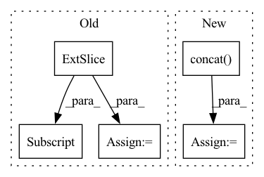

Pattern ID :2189

Before Change
mses.append(to_numpy(mse).item())
val_pvars = []
inputs = self.raw_time_series[:, 0, :].clone().unsqueeze(1).to(self.model.device)
for _ in range(100):
val_x_pred = self.model.get_prediction_trace(inputs)
pvar = PVarianceLoss()(val_x_pred, self.raw_time_series.to(val_x_pred.device))
After Change
self.eprop.on_batch_begin(self)
inputs = self.true_time_series[:, 0, :].clone().unsqueeze(1).to(self.model.device)
x_pred = self.model.get_prediction_trace(inputs)
x_pred = torch.concat([inputs, x_pred], dim=1)
self.current_training_state = self.current_training_state.update(pred_batch=x_pred)
self.eprop.on_batch_end(self)
self.eprop.on_train_end(self)
In pattern: SUPERPATTERN
Frequency: 3
Non-data size: 5
Instances
Fragment ID: 9317626
Project Name: neurotorch/neurotorch
Commit Name: 9ba260c32491b2e046fbd60f8599ede10b9e6273
Time: 2023-02-01
Author: 93488840+AnthoDrouin@users.noreply.github.com
File Name: src/neurotorch/learning_algorithms/debug_e_prop_v5.py
M Class Name: SimplifiedEpropFinal
N Class Name: SimplifiedEpropFinal
M Method Name: train(4)
N Method Name: train(4)
M Parent Class:
N Parent Class:
M File Name: src/neurotorch/learning_algorithms/debug_e_prop_v5.py
N File Name: src/neurotorch/learning_algorithms/debug_e_prop_v5.py
M Start Line: 116
M End Line: 145
N Start Line: 126
N End Line: 146
'>
Before Change
mask_value = 0 // value is ignored
for hh_start, hh_end in zip(hh_split[:-1], hh_split[1:]):
for ww_start, ww_end in zip(ww_split[:-1], ww_split[1:]):
mask[hh_start:hh_end, ww_start:ww_end] = mask_value
mask_value += 1
mask = tf.convert_to_tensor(mask)
// return mask
mask = tf.reshape(mask, [height // window_height, window_height, width // window_width, window_width])
After Change
rr = [tf.zeros([hh, ww_split[id + 1] - ww_split[id]]) + (id + mask_value) for id in range(total_ww)]
mask.append(tf.concat(rr, axis=-1))
mask_value += total_ww
mask = tf.concat(mask, axis=0)
// return mask
mask = tf.reshape(mask, [height // window_height, window_height, width // window_width, window_width])
mask = tf.transpose(mask, [0, 2, 1, 3])
'>
Fragment ID: 9317643
Project Name: leondgarse/keras_cv_attention_models
Commit Name: bcd22fc3dc9889d71afdf773b78b74d3211754be
Time: 2022-04-06
Author: leondgarse@gmail.com
File Name: keras_cv_attention_models/swin_transformer_v2/swin_transformer_v2.py
M Class Name: AnonimousClass
N Class Name: AnonimousClass
M Method Name: make_window_attention_mask(6)
N Method Name: make_window_attention_mask(6)
M Parent Class:
N Parent Class:
M File Name: keras_cv_attention_models/swin_transformer_v2/swin_transformer_v2.py
N File Name: keras_cv_attention_models/swin_transformer_v2/swin_transformer_v2.py
M Start Line: 111
M End Line: 119
N Start Line: 110
N End Line: 118
'>
Before Change
mask = paddle.where(mask_cond, paddle.full(mask_cond.shape, 0), mask)
if past_key_values_length > 0:
mask[:, :past_key_values_length] = False
expanded_mask = mask.unsqueeze(0).expand([batch_size, target_length, target_length + past_key_values_length])
return expanded_mask
After Change
mask = masked_fill(mask, mask_cond < (mask_cond + 1).reshape([mask.shape[-1], 1]), 0)
if past_key_values_length > 0:
mask = paddle.concat([paddle.zeros(target_length, past_key_values_length), mask], axis=-1)
return mask[None, None, :, :].expand([batch_size, 1, target_length, target_length + past_key_values_length])
'>
Fragment ID: 9317648
Project Name: paddlepaddle/paddlenlp
Commit Name: 5f01f073ed6e140743170652b201c16356350dc7
Time: 2023-04-13
Author: 40840292+linjieccc@users.noreply.github.com
File Name: paddlenlp/transformers/llama/modeling.py
M Class Name: AnonimousClass
N Class Name: AnonimousClass
M Method Name: _make_causal_mask(3)
N Method Name: _make_causal_mask(3)
M Parent Class:
N Parent Class:
M File Name: paddlenlp/transformers/llama/modeling.py
N File Name: paddlenlp/transformers/llama/modeling.py
M Start Line: 96
M End Line: 106
N Start Line: 101
N End Line: 109